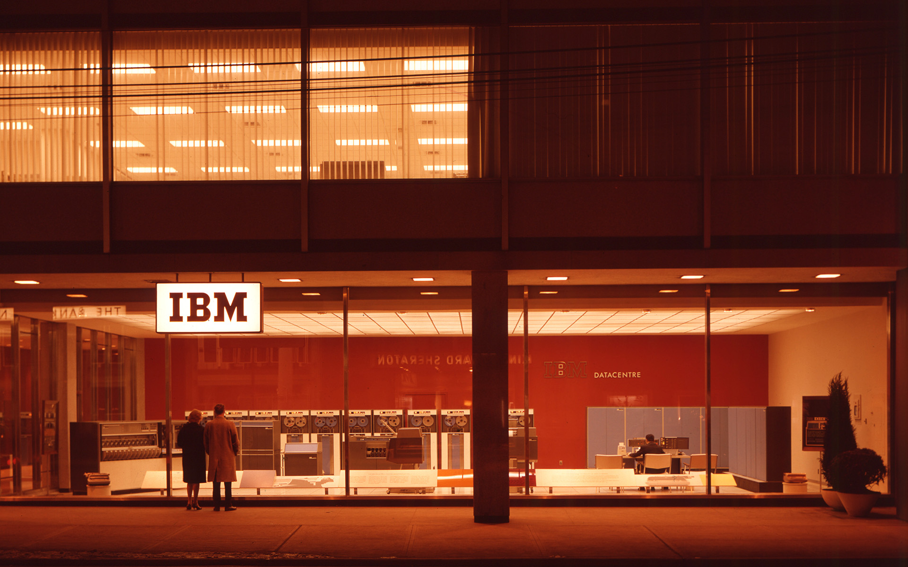
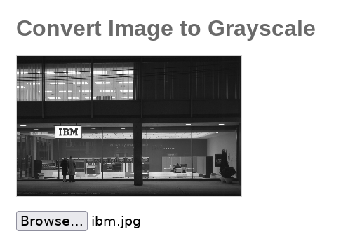

Grayscale
i find with grayscale images a unique aesthetic that is distinct from full-color images. especially images that are referring to something old where it convey sense of timelessness or nostalgia, as black and white photography has a rich history that dates back to the origins of photography itself.
most photo editors had black and white theme, but i like to do things the hard way, so here is an attempt to do it in JavaScript and html canvas API.
to get started we need 2 things to work on :
- image
- canvas to draw on
so we will use HTML elements for this
1<h1>Convert Image to Grayscale</h1>
2
3<canvas id="out-canvas">
4</canvas>
5
6<input type="file" multiple="false"
7 accept="image/*" id="img-input" >
so here we use canvas HTML element which have a rich API for manipulating images and visuals; and the input HTML element to read the input file from.
now we call these from JavaScript
1const imgInput = document.getElementById('img-input');
2const canvas = document.getElementById('out-canvas');
3
4const ctx = canvas.getContext('2d');
here we use also getContext from the canvas API which will give us two-dimensional rendering context to draw the out image.
now we need to take action when an image is selected to this input field so here we use the onchange event listener:
1...
2imgInput.onchange = e => {
3 // here we handle the transformations
4}
now we need to get the file that was selected, since we are working here on a single image, we’ll take the image that was selected first ([0] in selected files array)
1imgInput.onchange = e => {
2 // here we handle the transformations
3}
we will use fileReader web API provided by the browser to read the image data.
1imgInput.onchange = e => {
2 const reader = new FileReader();
3 reader.onload = (e) => {
4 // convert ;
5 }
6 const file = e.target.files[0];
7 reader.readAsDataURL(file);
8}
here when we upload an image to imgInput it appears as a File object in event.target.files list and we call the readAsDataURL method on it which read data asynchronically; then we create function that is called when loading finishes successfully (onload) and inside it we can use the data returned (base64).
1...
2reader.onload = (e) => {
3 const img = new Image();
4 img.onload = () => {
5
6 }
7}
8...
now we need to set the canvas width and height to the image width and height so the image takes the resulting image takes the same size as the original one. and then give the informations needed by the context (2d) to draw image with, in method drawImage() we need to set three parameters the image to be drawn (here it’s stored in the variable img) and dx and dy which are x-axis coordinate in the destination canvas and y-axis, these are similar to padding in css as i understand it defines the place where to start the top left and bottom right of the image shown, which we want to be on the entire canvas so we will set to 0 both (you can play with these numbers a little bit to understand their behaviour);
1...
2reader.onload = (e) => {
3 const img = new Image();
4 img.onload = () => {
5 canvas.width = img.width;
6 canvas.height = img.height;
7 ctx.drawImage(img, 0, 0);
8
9 }
10}
11...
now to define the content to draw we need to get the original image data that we can work on, here we’ll use the getImageData method, which takes x and y coordinates to define where to start and where to end reading data, so also here we will give it 0 on both so the whole image is read, then the size of the rectangle from which the image data is read, so here we can use the canvas width and height or img width and height, i’ll use the canvas ones to take the possibility that the canvas size can be changed from external sources like css in mind.
1...
2reader.onload = (e) => {
3 const img = new Image();
4 img.onload = () => {
5 canvas.width = img.width;
6 canvas.height = img.height;
7 ctx.drawImage(img, 0, 0);
8
9 const imageData = ctx.getImageData(0, 0, canvas.width, canvas.height);
10 }
11}
12...
now as getImageData methdo returned an ImageData object, this object has a data property that stores an array of pixels of the image, every pixel is represented with 4 items in the array: red, green, blue and alpha(which the transparency thing afaik). so here we loop throughout this array and read the value of each of the first three the find their average, so we can assign the same value for red, green and blue of the pixel so we can get a pixel with color that can fit on the gray scale.
1...
2reader.onload = (e) => {
3 const img = new Image();
4 img.onload = () => {
5
6 ...
7 const imageData = ctx.getImageData(0, 0, canvas.width, canvas.height);
8
9
10 for (let i = 0; i < imageData.data.length; i += 4) {
11 const red = imageData.data[i];
12 const green = imageData.data[i + 1];
13 const blue = imageData.data[i + 2];
14
15 const avg = (red + green + blue) / 3;
16
17 imageData.data[i] = avg;
18 imageData.data[i + 1] = avg;
19 imageData.data[i + 2] = avg;
20 }
21 }
22}
23...
now as we did the transformations we put back the updated image data on the canvas and set the source of the image element to the loaded file
1...
2reader.onload = (e) => {
3 const img = new Image();
4 img.onload = () => {
5
6 ...
7 const imageData = ctx.getImageData(0, 0, canvas.width, canvas.height);
8
9
10 for (let i = 0; i < imageData.data.length; i += 4) {
11 ...
12 }
13 ctx.putImageData(imageData, 0, 0);
14 }
15 img.src = event.target.result;
16}
17...
now we can try our code

converts to
